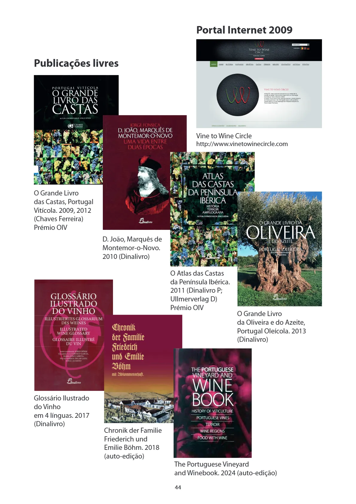
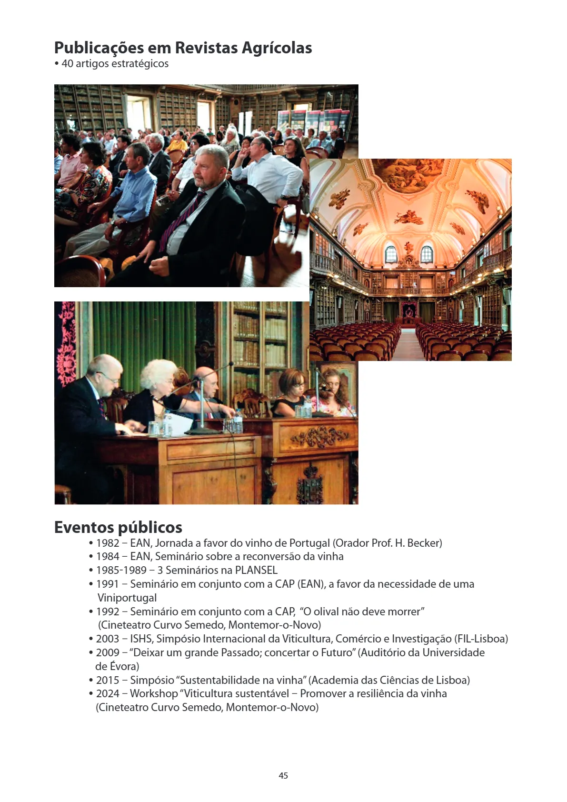

Parte 4 · Retrospetiva do trabalho de relações públicas: diálogo e publicações
Retrospetiva do trabalho de relações públicas: diálogo e publicações


Parte 4 · Retrospetiva do trabalho de relações públicas: diálogo e publicações

